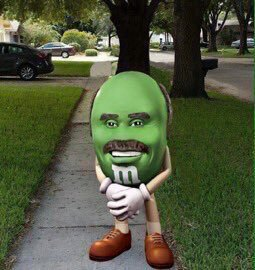
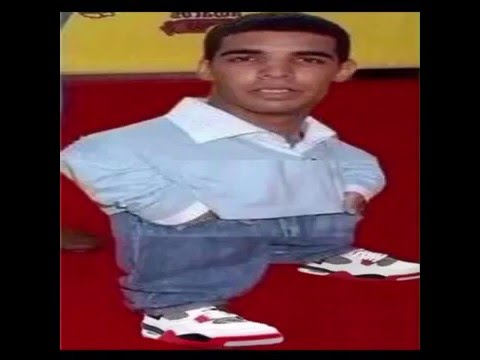
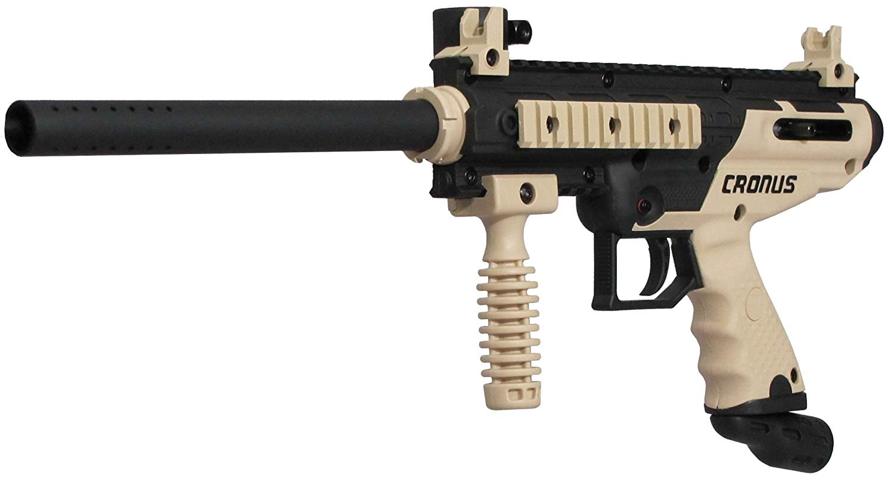
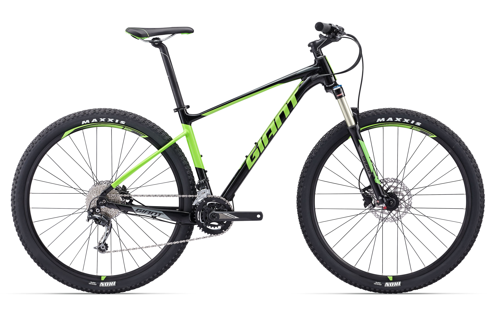

yeetrs
-
Dank Memes
example of a dank meme-Steve harvey MnM/Midget drake... 'nuff said.
 
-
The paintball gun that I personally own
(tippmann cronus, without the aftermarket trinity 20" barrel) I use this setup to almost exclusively stay back and pick off players, or cover my friends as they rush ahead.
 -
Mountain Bikes
Giant Fathom
I also own this bike in this colorway. I will often go into the mountains around my house and go for a ride. Mountin bikes, in my opinion are one of the funnest ways to have fun and stay fit. 
This is the scratch game that I made